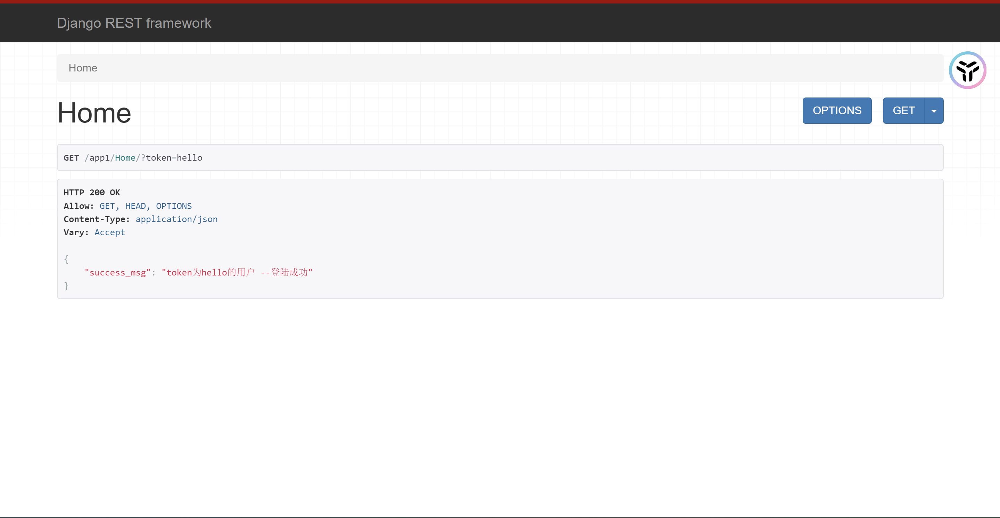
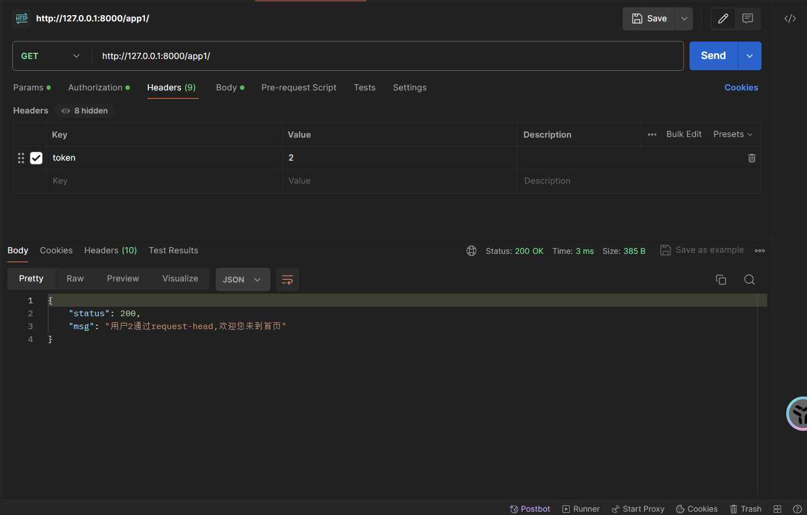
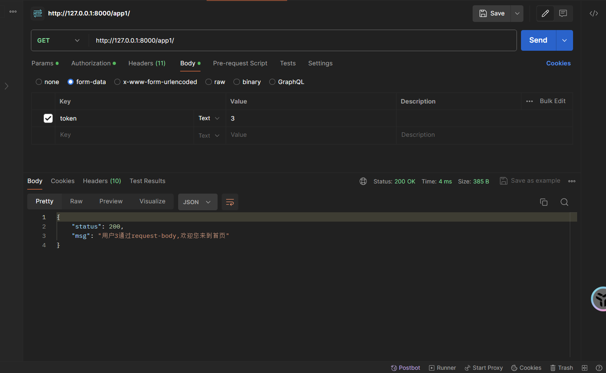
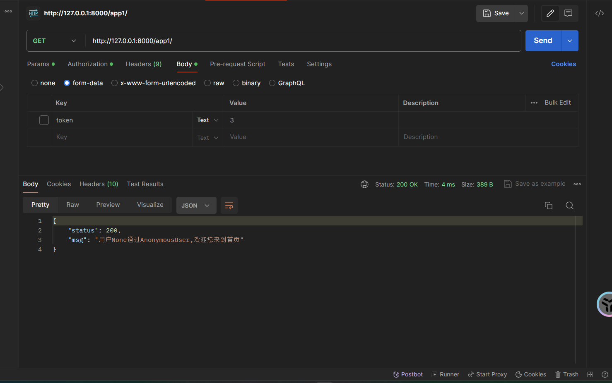
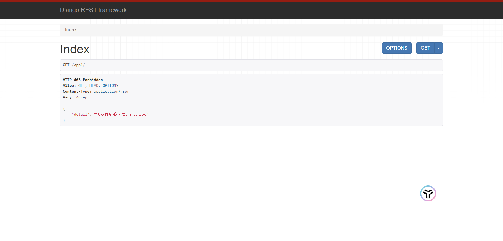
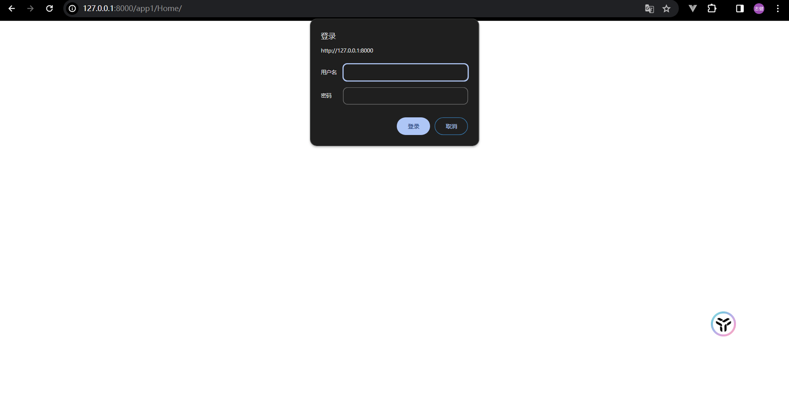

Drf 用户认证 Authentication
as_view的本质
当用户访问网址时，就会触发视图函数，as_view函数就被触发，在as_view当中，同时调用了他父类的as_view函数。
@classmethod
def as_view(cls, **initkwargs):
"""
Store the original class on the view function.
This allows us to discover information about the view when we do URL
reverse lookups. Used for breadcrumb generation.
"""
if isinstance(getattr(cls, 'queryset', None), models.query.QuerySet):
def force_evaluation():
raise RuntimeError(
'Do not evaluate the `.queryset` attribute directly, '
'as the result will be cached and reused between requests. '
'Use `.all()` or call `.get_queryset()` instead.'
)
cls.queryset._fetch_all = force_evaluation
view = super().as_view(**initkwargs)
view.cls = cls
view.initkwargs = initkwargs
# Note: session based authentication is explicitly CSRF validated,
# all other authentication is CSRF exempt.
return csrf_exempt(view)
父类函数的as_view
@classonlymethod
def as_view(cls, **initkwargs):
"""Main entry point for a request-response process."""
for key in initkwargs:
if key in cls.http_method_names:
raise TypeError(
"The method name %s is not accepted as a keyword argument "
"to %s()." % (key, cls.__name__)
)
if not hasattr(cls, key):
raise TypeError(
"%s() received an invalid keyword %r. as_view "
"only accepts arguments that are already "
"attributes of the class." % (cls.__name__, key)
)
def view(request, *args, **kwargs):
self = cls(**initkwargs)
self.setup(request, *args, **kwargs)
if not hasattr(self, "request"):
raise AttributeError(
"%s instance has no 'request' attribute. Did you override "
"setup() and forget to call super()?" % cls.__name__
)
return self.dispatch(request, *args, **kwargs)
view.view_class = cls
view.view_initkwargs = initkwargs
# __name__ and __qualname__ are intentionally left unchanged as
# view_class should be used to robustly determine the name of the view
# instead.
view.__doc__ = cls.__doc__
view.__module__ = cls.__module__
view.__annotations__ = cls.dispatch.__annotations__
# Copy possible attributes set by decorators, e.g. @csrf_exempt, from
# the dispatch method.
view.__dict__.update(cls.dispatch.__dict__)
# Mark the callback if the view class is async.
if cls.view_is_async:
markcoroutinefunction(view)
return view
其父类的as_view函数的作用就是检验as_view中传递参数的合法性，并且返回一个view，实际上view中实现dispatch方法，再去父类中查找这个dispatch方法，发现父类中并没用找到这个方法。
那我们再去子类中查找这个dispatch方法，如下
def dispatch(self, request, *args, **kwargs):
"""
`.dispatch()` is pretty much the same as Django's regular dispatch,
but with extra hooks for startup, finalize, and exception handling.
"""
self.args = args
self.kwargs = kwargs
request = self.initialize_request(request, *args, **kwargs)
self.request = request
self.headers = self.default_response_headers # deprecate?
try:
self.initial(request, *args, **kwargs)
# Get the appropriate handler method
if request.method.lower() in self.http_method_names:
handler = getattr(self, request.method.lower(),
self.http_method_not_allowed)
else:
handler = self.http_method_not_allowed
response = handler(request, *args, **kwargs)
except Exception as exc:
response = self.handle_exception(exc)
self.response = self.finalize_response(request, response, *args, **kwargs)
return self.response
这个dispatch方法的作用：
- 原生django中request传递过来的数据，把他们封装到字典或者元组中，存入APIView的self.args和self.kwargs中
- 并且对django的request进行二次封装
- 设置响应头
Drf封装的request
def initialize_request(self, request, *args, **kwargs):
"""
Returns the initial request object.
"""
parser_context = self.get_parser_context(request)
return Request(
request,
parsers=self.get_parsers(),
authenticators=self.get_authenticators(),
negotiator=self.get_content_negotiator(),
parser_context=parser_context
)
authenticators=self.get_authenticators() 在Drf的request当中新增了用户认证
我们来看一下用户认证具体实现的方法
def get_authenticators(self):
"""
Instantiates and returns the list of authenticators that this view can use.
"""
return [auth() for auth in self.authentication_classes]
- self.get_authenticators()源码分析，采用列表生成式，循环self.authentication_classes，实例化其中的每一个类，返回列表。
- 不难发现authentication_classes属性正式我们在认证的时候用到认证类列表，这里会自动寻找该属性进行认证。
- 倘若我们的视图类没有定义认证方法呢？，当然django rest framework 已经给我们加了默认配置，
- 如果我们没有定义会自动使用settings中的DEFAULT_AUTHENTICATION_CLASSES作为默认(全局)下面是APIView类中的共有属性
我们上面分析了APIView在原有的request基础上封装了一些其他功能
self.initialize_request(request, *args, **kwargs)
我们继续分析往下从diapath()这个方法往下走
我们可以看到他是将我们封装后的新的request继续往下传递，然后执行
在dispatch函数当中还有一个self.initial(request, *args, **kwargs)方法
# 这里的request 是封装后的request，传入def initial(self, request, *args, **kwargs)这个方法
def initial(self, request, *args, **kwargs):
"""
Runs anything that needs to occur prior to calling the method handler.
"""
self.format_kwarg = self.get_format_suffix(**kwargs)
# Perform content negotiation and store the accepted info on the request
neg = self.perform_content_negotiation(request)
request.accepted_renderer, request.accepted_media_type = neg
# Determine the API version, if versioning is in use.
version, scheme = self.determine_version(request, *args, **kwargs)
request.version, request.versioning_scheme = version, scheme
# Ensure that the incoming request is permitted
# 身份认证
self.perform_authentication(request)
# 检查权限
self.check_permissions(request)
# 流量限速
self.check_throttles(request)
dispatch中的用户认证
perform_authentication
def perform_authentication(self, request):
"""
Perform authentication on the incoming request.
Note that if you override this and simply 'pass', then authentication
will instead be performed lazily, the first time either
`request.user` or `request.auth` is accessed.
"""
request.user
他返回的是新封装request的user属性。那我们就得看下他源码是如何封装这个属性，以及user这个属性表示什么
@property
def user(self):
"""
Returns the user associated with the current request, as authenticated
by the authentication classes provided to the request.
返回与当前请求关联的经过身份验证的用户，提供给请求的身份验证
"""
# 判断如果_user 不在request中的话，执行 self._authenticate()这个方法
if not hasattr(self, '_user'):
with wrap_attributeerrors():
# 执行认证方法
self._authenticate()
return self._user
这里面的user是在新的封装的request这个类中找到的
我们可以看到他其实还是执行了self._authenticate()。我们还是要看下他的这个authenticate()方法。
self._authenticate
def _authenticate(self):
"""
Attempt to authenticate the request using each authentication instance
in turn.
"""
for authenticator in self.authenticators:
try:
# 执行认证类的authenticate方法
# 这里分三种情况
# 1.如果authenticate方法抛出异常，self._not_authenticated()执行
# 2.有返回值，必须是元组：（request.user,request.auth）
# 认证类的实例执行authenticate()这个方法，这个可以重写自己的代码逻辑
user_auth_tuple = authenticator.authenticate(self)
except exceptions.APIException:
self._not_authenticated()
raise
# 3.返回None，表示当前认证不处理，等下一个认证来处理
if user_auth_tuple is not None:
self._authenticator = authenticator
# 返回值对应示例中的token_obj.user和token_obj
self.user, self.auth = user_auth_tuple
return
self._not_authenticated()
小结
1. 这里他将执行每一个认证类的实例的authenticate()方法，也就是说如果要写认证类的话是必须写这个方法的
2. 必须要求返回元祖，然后元祖不为空时就将元祖内的user赋值给self.user，其实也就是侧面赋值给了self._user,
返回到self.perform_authentication(request)这里，其实也就是返回了这个self._user,使得我们认证知道请求是谁，是否登录的作用
def authenticate(self, request)
class ForcedAuthentication:
"""
This authentication class is used if the test client or request factory
forcibly authenticated the request.
"""
def __init__(self, force_user, force_token):
self.force_user = force_user
self.force_token = force_token
# 一定返回元组
def authenticate(self, request):
return (self.force_user, self.force_token)
这个认证工厂要求必须返回元祖
def _not_authenticated(self)
def _not_authenticated(self):
"""
Set authenticator, user & authtoken representing an unauthenticated request.
Defaults are None, AnonymousUser & None.
"""
self._authenticator = None
if api_settings.UNAUTHENTICATED_USER:
self.user = api_settings.UNAUTHENTICATED_USER()
else:
self.user = None
if api_settings.UNAUTHENTICATED_TOKEN:
self.auth = api_settings.UNAUTHENTICATED_TOKEN()
else:
self.auth = None
小结
没有身份，相当于匿名用户，默认设置AnonymousUser，如需要单独设置匿名用户返回值，
则编写需要写UNAUTHENTICATED_USER的返回值
所以我们需要认证的时候，需要在每一个认证类中定义authenticate进行验证，并且需要返回元祖
全局配置与局部配置
首先我们先补充点面向对象的知识
class APIView(object):
authentication_classes=读取配置文件中的列表
def dispatch(self):
self.authentication classes
class Userview(APIView):
authentication_classes=[11,22,3,44]
obj Userview()
obj.dispatch()
在创建子类对象时，调用子类对象的方法时，优先会去子类中找，如果没有才会去父类找，如果父类方法中也调用了方法，也会优先去子类找方法，找不到才会在父类调用方法。
和前文的base.py(Django的View视图)中调用了dispatch方法，而其并未定义dispatch方法，让其子类(APIView)去实现（接受参数，封装request对象，添加认证功能等等）
全局配置
在setting.py中加入以下代码
# 全局配置Drf
REST_FRAMEWORK={
"DEFAULT_AUTHENTICATION_CLASSES":["ext.auth.LoginAuthentication",] #你自己认证类的路径
}
上述自定义的配置文件本质是
def get_authenticators(self):
"""
Instantiates and returns the list of authenticators that this view can use.
"""
return [auth() for auth in self.authentication_classes]
Drf会在APIView中实例化authentication_classes里的内容
局部配置
# 可以设置authentication_classes中列表的值添加验证组件
authentication_classes = [
LoginAuthentication,
]
根据前面面向对象的知识，当我们自定义验证类的时候，并使用自定义类的as_view时，优先级是大于Drf所读取的配置文件。
也就是说，局部配置 > 全局配置
举个例子：
验证类:
from rest_framework.authentication import BaseAuthentication
from rest_framework.exceptions import AuthenticationFailed
# Create your views here.
# 用户是否登录校验
class LoginAuthentication(BaseAuthentication):
def authenticate(self, request):
token = request._request.GET.get("token")
if token:
return "username", token
raise AuthenticationFailed(
{
'status': False,
'error_msg': "你的账户尚未登录",
}
)
视图类：
from django.shortcuts import render
from rest_framework.views import APIView
from rest_framework.response import Response
from ext.auth import LoginAuthentication
# 首页
class Home(APIView):
# 可以设置authentication_classes中列表的值添加验证组件
authentication_classes = [
LoginAuthentication,
]
def get(self, request):
# 认证类会把request.user,request.auth返回给一个元组，并且该示例中request.auth是一个token
print(request.user, request.auth)
return Response({"success_msg": f"token为{request.auth}的用户 --登陆成功"})
# 订单
class Order(APIView):
authentication_classes = []
def get(self, request):
return Response({"success_msg": "登陆成功"})
全局配置：
# 全局配置Drf
REST_FRAMEWORK={
"DEFAULT_AUTHENTICATION_CLASSES":["ext.auth.LoginAuthentication",] #你自己认证类的路径
}


子类配置的authentication_classes会覆盖全局配置，如Order接口所示。
多个认证类
假如说我现在有一个业务需求，写一个校验用户发起的请求是否携带token的接口，各个平台的token携带方式不同，比如：
PC端网页=>url
微信小程序=>request-header
安卓浏览器=>request-body
在ext下的auth设置多个认证类
# 检验url是否有token
class UrlAuthentication(BaseAuthentication):
def authenticate(self, request):
token = request.query_params.get("token",None)
if not token:
return
return "url",token
# 检验请求头是否有token
class RequestHeadAuthentication(BaseAuthentication):
def authenticate(self, request):
token = request.META.get("HTTP_TOKEN",None)
print(token)
if not token:
return
return "request-head", token
# 检验请求体是否·有token
class RequestBodyAuthentication(BaseAuthentication):
def authenticate(self, request):
token = request.data.get("token",None)
if not token:
return
return "request-body", token
views.py
class Index(APIView):
authentication_classes = [UrlAuthentication,RequestHeadAuthentication,RequestBodyAuthentication]
def get(self, request):
token = request.auth
return Response({"status":200,"msg":f"用户{token}通过{request.user},欢迎您来到首页"})
结果：



当时这样做会有个漏洞，假如说用户哪个地方都没携带token

为了避免这种情况，我们应该在视图中的authenication_classes末尾添加一个直接抛出异常的认证类，给用户返回403状态码，因为用户没有足够权限，必须得登录，生成token
class NoLoginAuthentication(BaseAuthentication):
def authenticate(self, request):
raise AuthenticationFailed("您没有足够权限，请您登录")

authenticate_header作用
authenticate_header的作用是返回“WWW-Authenticate: xxxxxx”信息和正确的状态码
假如说认证类不设置authenticate_header，用户访问出错会返回403状态码
实际上，Drf的AuthenticationFailed是这样定义的
class AuthenticationFailed(APIException):
status_code = status.HTTP_401_UNAUTHORIZED
default_detail = _('Incorrect authentication credentials.')
default_code = 'authentication_failed'
如果是认证不通过，则返回401状态码
补充:
401 ===> 一般是指认证错误，这是专门为认证设计的
403 ===> 服务器禁止用户访问资源，不仅仅只包含认证问题，比如说爬虫的时候，使用多线程爬取网站，结果爬到一半，直接报403，对方服务器使用自动化脚本把你IP封了，
说到底服务器就是监测用户可疑行为，如发现用户所在位置被屏蔽了（openai）,就会直接封禁，不允许用户访问
可以说403包含了401
AuthenticationFailed使用401状态码更加精准
就拿上面的Home接口举例

没有设置authenticate_header导致返回状态码出错
def authenticate_header(self, request):
return "API"
往认证类追加authenticate_header方法后：

Drf还提供了另一种authenticate_header的方法
def authenticate_header(self, request):
return 'Basic realm="%s"' % self.www_authenticate_realm
在监测到响应头有“WWW-Authenticate: xxxxxx”信息时：弹出弹窗校验

但是实际开发用得很少，因为请求接口，要么成功，要么失败，成功返回数据，失败返回状态码，错误信息，你弹个弹窗出来是什么意思嘛~~
自定义认证类和其父类(BaseAuthentication)
BaseAuthentication
class BaseAuthentication:
"""
All authentication classes should extend BaseAuthentication.
"""
def authenticate(self, request):
"""
Authenticate the request and return a two-tuple of (user, token).
"""
raise NotImplementedError(".authenticate() must be overridden.")
def authenticate_header(self, request):
"""
Return a string to be used as the value of the `WWW-Authenticate`
header in a `401 Unauthenticated` response, or `None` if the
authentication scheme should return `403 Permission Denied` responses.
"""
pass
父类的authenticate方法直接抛出异常，子类必须重写该方法，否则Drf加载自定义认证类时候会直接去父类找，抛出异常，程序报错